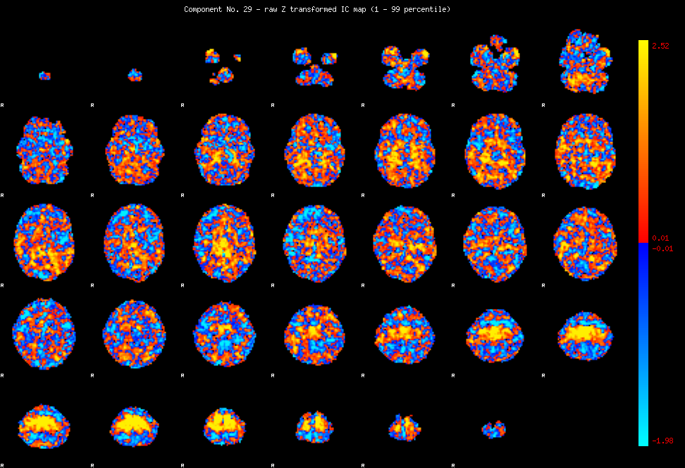
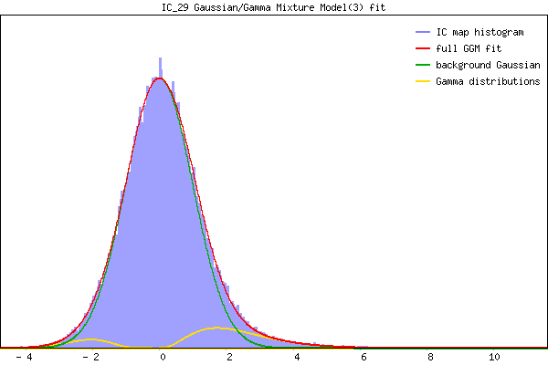

IC_29 Mixture Model fit
Means : -0.000000 2.385663 -2.255890
Vars : 1.000000 1.558126 0.497432
Prop. : 0.906510 0.074169 0.019321
This page produced automatically by MELODIC Version 3.10 - a part of FSL - FMRIB Software Library.